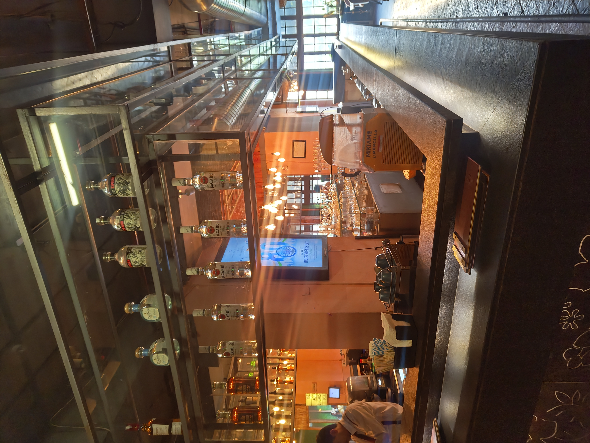
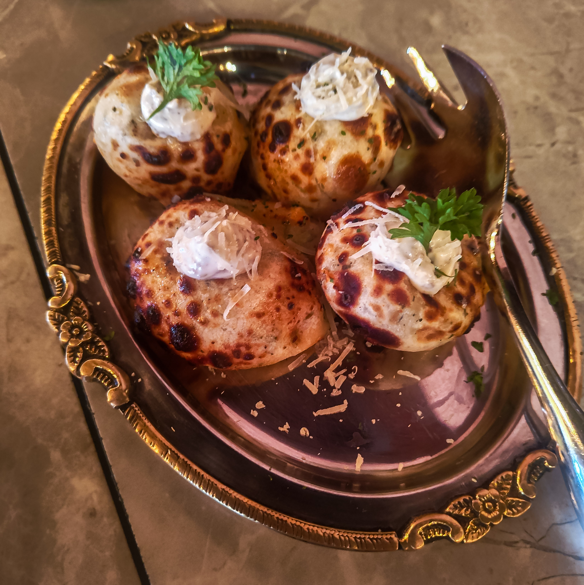
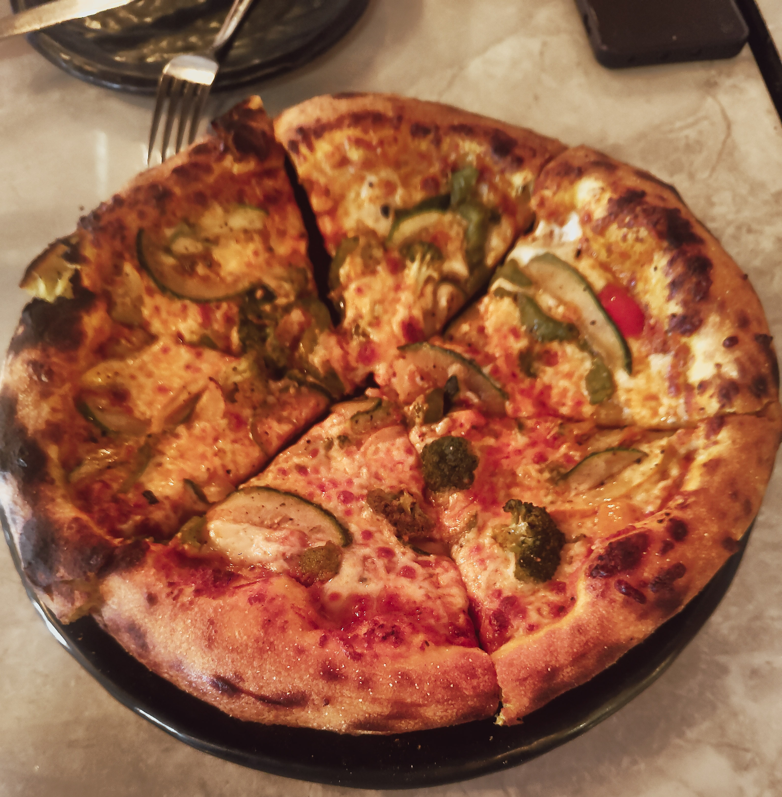
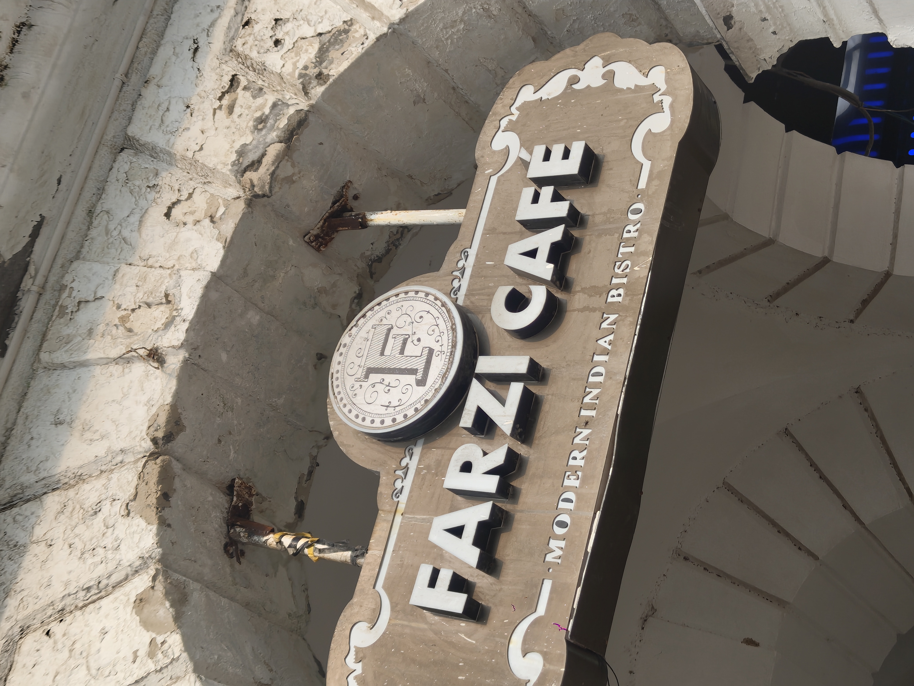

Farzi Cafe, Connaught PlaceThe best thing I ate was a Coke Zero
PUBLISHED 14 AUGUST 2026
The Reorder
Four dishes. Not one I would order a second time.

I went to Farzi Cafe because everyone has been to Farzi Cafe. That is the whole reason. It is the name you have seen on a hundred Instagram stories, usually with the room in the background and the food slightly out of frame, and I wanted to know whether the food deserved to be out of frame or whether that was the point.
It took us a while to find it, and parking was its own problem. Fine. Places in CP are allowed to be difficult.
What to order
- SkipCheese and truffle kulcha
- SkipBageecha taftan pizza
- SkipAlfredo white sauce pasta
- SkipCold coffee
That is the entire table. There is no order column because nothing earned one.
The room
This is the part Farzi is selling and it is the part that almost works.
It looks like money. It does not look like the photographs online, which are better lit and emptier than the real thing, but it looks like somewhere you would take a picture. Then you sit down and the room stops cooperating. The music was loud enough that the three of us had to raise our voices at a table of four, which is a strange thing to have to do at these prices.
We were three people at a table for four, so I took one of the spare chairs. The back of it was loose. Not broken exactly, just not staying where a chair back should stay, so I moved to the one next to it and did not mention it to anyone.
That is a small thing. It is also the kind of small thing a restaurant charging ₹878 a head should not have on the floor. Somebody sat in that chair before me and somebody sat in it after.
The food

Cheese and truffle kulcha. It reads uncooked. It was not uncooked, I want to be fair about that, but every bite felt like it should have had another minute somewhere. Truffle in the name is doing more work than truffle in the dish.

Bageecha taftan pizza. Burnt. Not charred, not blistered, burnt, and you taste it before you taste anything else. This was the moment the meal turned for me. I put the piece down and thought, this is just an overhyped place.
Alfredo white sauce pasta. Nothing wrong with it. That is also the most I can say for it. I have had better white sauce pasta for a third of this, and the piece of bread on the side was too small to be worth putting on the plate.
Cold coffee. Sent back for being under-sugared, came back correct. Fine on the second attempt, and still not something I would order again.
Coke Zero. I order a Coke Zero everywhere I go, which is exactly why it does not count towards the rating. It is the control. At Farzi Cafe it was also the best thing on the table, and I have thought about whether that line is unfair. It is not. Nothing else I ate that night was something I would order again, and the number at the top of this page says so in four characters.
The staff recommended a dish. I took the recommendation. It was not good.

The service
Here is where I have to stop complaining.
I score every place on food, value, service and room. Farzi Cafe has the only 5 I have given in any category, and it is for service.
One person looked after us throughout. They checked in after the food landed. Somebody went out of their way for us. The cold coffee went back for being under-sugared and came out correct without an argument or a face. Nobody was rude, nobody rushed us, nobody made us feel like a table that needed turning.
The floor staff at Farzi are better than the floor staff anywhere else I have eaten this year. They are working for a kitchen that is letting them down, and for a bill that is embarrassing them.
That is the review, really. Everything wrong with this place happens somewhere the waiters cannot reach.
The bill
₹878 a head, and it landed higher than any of us expected. Prices on the menu had already surprised me, there were charges I had not accounted for, and a service charge went on automatically.
I could have eaten better within walking distance for that money. Not maybe. Definitely.
The verdict
Farzi Cafe is pretending to be a fine dining experience and failing at it completely. It may have started as something good. It has not improved, and the name is now doing the work the kitchen should be doing.
I am not spending my own money here again. I would not send a friend on the same budget, and it is not a place for a date or for parents.
If you want the photograph for your story, it is still the best-looking room on this list. Go, take the picture, eat somewhere else.